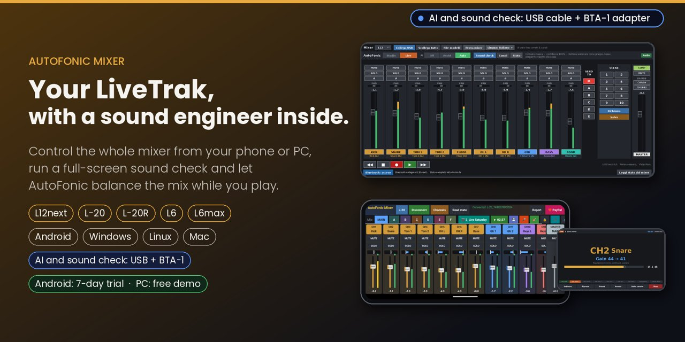
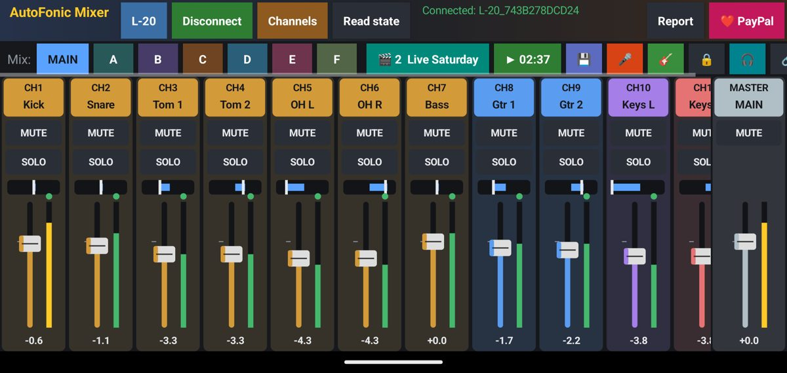
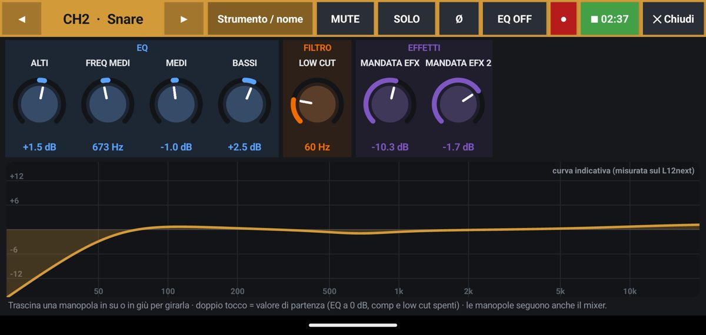
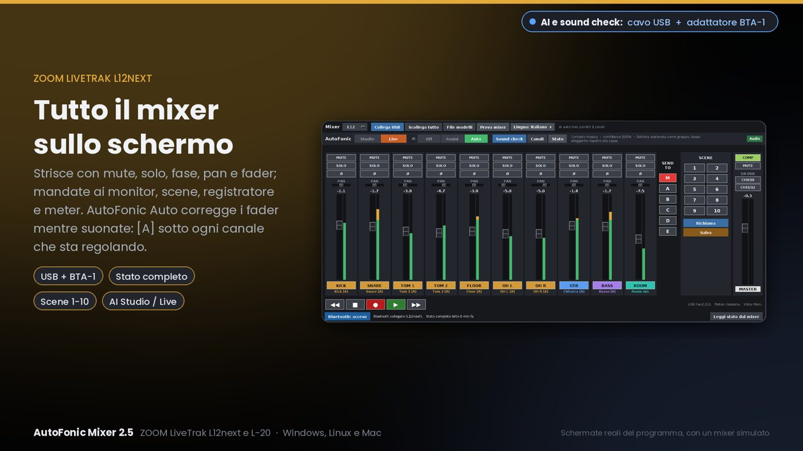

AUTOFONIC MIXER
The ZOOM LiveTrak app for Android and PC
Control your ZOOM LiveTrak L-20, L-20R, L12next, L6 and L6max from an Android phone or a Windows, Linux or Mac computer. ZOOM's own control apps run only on iPhone and iPad: AutoFonic Mixer is the L-20 / L-20R app for Android and the LiveTrak controller for the PC.

Supported mixers
L12nextL-20L-20RL6L6max
| Mixer | Connection | Phone and PC |
|---|---|---|
| ZOOM LiveTrak L12next | USB + ZOOM BTA-1 Bluetooth | ✅ all controls, sound check and auto mix on the PC |
| ZOOM LiveTrak L-20 / L-20R | USB + ZOOM BTA-1 Bluetooth | ✅ all controls, tested on real mixers |
| ZOOM LiveTrak L6 / L6max | USB-C, or wireless with a CME WIDI Jack | ✅ works |
What you can do

All the faders in your hand. Faders, pan, mute, solo, meters and SIG lights for every channel, stereo channels and effect returns. Perfect for the L-20R, which has no faders.

Every channel setting. 3-band EQ with mid frequency, low cut, polarity, EQ OFF, EFX 1 and 2 sends, monitor mixes A–F for each musician.

On the PC too. Windows, Linux and Mac, with scenes, the SD recorder (REC/PLAY per channel, play, stop, time) and the full mixer state read from the desk.

A sound engineer inside. On the PC, a full-screen sound check readable from behind the drums, and an assistant that listens to every channel over USB and balances the mix while you play.
Frequently asked questions
Is there a ZOOM L-20 / L-20R app for Android?
Yes: AutoFonic Mixer, on Google Play. ZOOM's L-20 Control app exists only for iOS. It connects with the ZOOM BTA-1 Bluetooth adapter, like ZOOM's app.
Can I control a ZOOM LiveTrak L-20R without an iPad?
Yes, from an Android phone or from a Windows, Linux or Mac computer.
Is there an app for the ZOOM L12next on Android or Windows?
Yes, on Android and on the PC, where it also runs the sound check and the automatic mix.
Does it work with the ZOOM L6 / L6max?
Yes, with the USB-C cable, or wireless with a CME WIDI Jack.
Is it free?
Android: 7-day free trial, then a one-time purchase. PC: free demo.
Independent project by Francesco Rizzo, not affiliated with ZOOM Corporation. ZOOM and LiveTrak are trademarks of ZOOM Corporation. Contact: autofonic.mixer@gmail.com · GitHub · Privacy